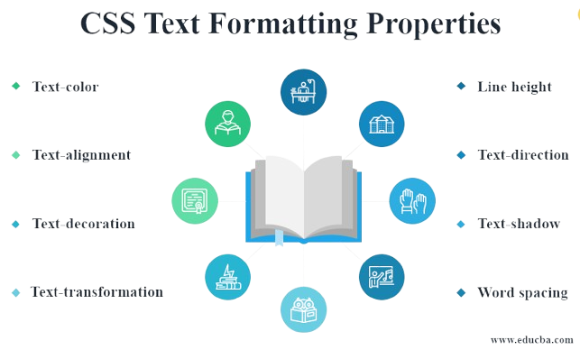

Text Properties

01. Text Align
text-align: left / right / center
Here text-align is property. left, right, center is value of alignments
02. Text Decoration
text-decoration: underline / overline / line-through
We can add underline, overline, linethrough, using text-deocaration property. here is another value of text-decoration property that is none when we use anchor link in our html by default anchor'll have underline so we use text-decoration none value.
03. Font weight
font-weight: normal / bold / bolder / lighter
font-weight: 100-900
We use font-weight property to make font bold or light, we can add font-weight upto 900, start from 100.
04. line height
line-height: 2px
line-heiht: 3
line-height: normal
In simple word line height means height of text line like we have height of line in notebooks same way we can give line height to text if we have paragraph in our page and we want space between text lines, there we can give line height.
05. Text Transform
text-transform: uppercase / lowercase / capitalize / none
If we want any text to fully in uppercase, lowercase, or each words first letter capitalize we have text transform property for that.
06. Font Family
font-family: arial
font-family: arial, roboto, sans-serif
font family means font style, we can add font families, in two ways 1. Specific font by font names, like arial, , roamn etc. 2. Generic fonts here we can only give one name of generic font like sans-sefir browser have right to use any font from sans-serif family.
Types of font families
- Generic font families: Generic font families are determined by font family properties such as seriefs—which are decorative strokes on the end of letters—or cursive strokes. The generic font family name will specify the attribute that all fonts within that family share, like serif, sans-serif, or monospace.
- Specific font families: Specific font families are specific fonts with different styles within the one font family name, such as Arial, Times New Roman, and Tahoma.
Generic Font Families
Here is an overview of the generic font families found in many word processing programs:
- Serif: Serif fonts are tradional typefaces using characters that have serifs which are small winged or flared tips exlending off the tips of a letter. Serif fonts are typically used in printed books, newspapers, and magzines. Some popular serif fonts include Times New Roman, Garamond, Palatino, and Georgia.
- Sans-Serif: Sans-Serif fonts use characters without serifs and are more commonly seen in digital formats. A Sans-serif fonts will typically be the default font in digital word processing programs. Sans-serif fonts include Arial, Helvetica, Verdana, Trebuchet MS, and Gill Sans.
- Cursive: Cursive fonts use characters that have connective strokes which give the font a handwritten appearance. Cursive fonts include Comic Sans MS, Adobe Poetica, Sanvito, and Zapf-Chancery.
- Fantasy: Fantasy fonts are stylized fonts that still maintain the characteristics of non-cursive, traditional alphabet glyphs. Examples include Cottonwood, Critter, and Alpha Geometrique.
- Monospace Fonts in the monospace font family have characters that are all the same width, giving text the appearance of a manual monospaced typewriter. Examples of monospace fonts include Courier New, Lucida Console, Consolas, and Everson Mono.
Units in CSS
Absolute Units
pixels (px)
96px = 1 inch
font-size: 2px;
Practice set
Q1: Create a headig centred on the page with all of is capitalized by default.
Click here for check my solutionQ2: Set the font family of all the contect in the document to "Times New Roman".
Click here for check my solutionQ3: Create one div inside another div. Set id & text "outer" for the first one & "inner" for the second one. Set the outer div text size to 25px & inner div text size to 10px.
Click here for check my solution